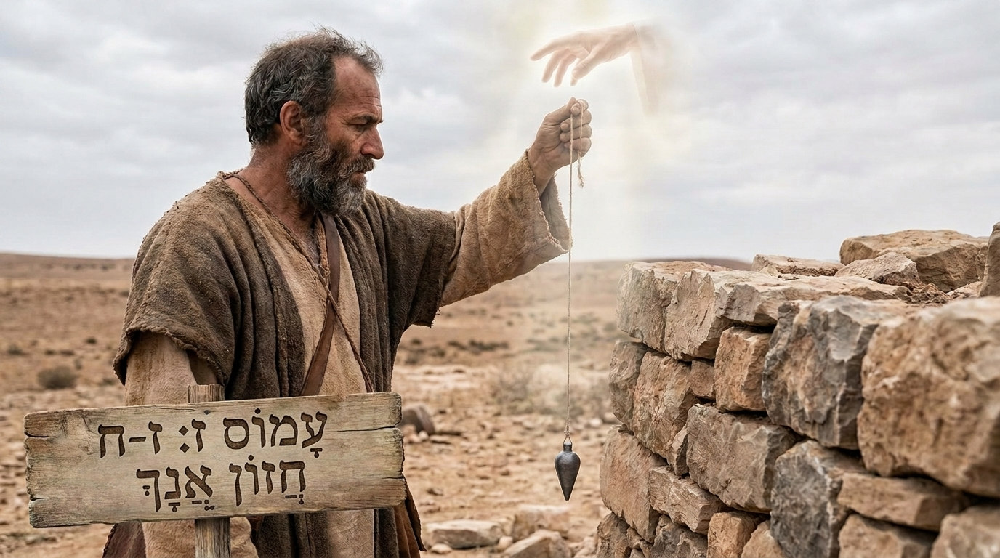

Justiça Social e Adoração Verdadeira
O livro de Amós traz um choque de realidade. Amós não era um profeta de carreira, mas um pastor de ovelhas e agricultor do sul (Judá) chamado por Deus para profetizar no próspero Reino do Norte (Israel). A nação estava em um momento de grande riqueza militar e econômica, mas havia uma terrível corrupção moral: os ricos oprimiam os pobres e a religião havia se tornado um ritual vazio e hipócrita. Amós declara que Deus rejeita a adoração daqueles que não praticam a justiça com o próximo.
Ficha Técnica
- Autor: O profeta Amós.
- Tema Principal: A exigência divina por justiça social, a condenação da hipocrisia religiosa e o inevitável julgamento de Israel.
- Versículo-Chave: "Em vez disso, corra a retidão como um rio, a justiça como um ribeiro perene!" (Amós 5:24)
Estrutura
- Julgamentos contra as nações vizinhas e contra Israel (Caps. 1-2)
- Mensagens sobre a corrupção, idolatria e opressão aos pobres em Israel (Caps. 3-6)
- Cinco visões de julgamento (gafanhotos, fogo, prumo, cesto de frutas e o altar) (Caps. 7-9:10)
- A promessa final de restauração e esperança para o povo de Deus (Cap. 9:11-15)